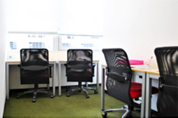
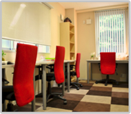

"士業"の開業準備は"全て"おまかせ！｜個室のレンタルオフィスならOpenoffice：東京・大阪をはじめ全国に20拠点以上
- 【個室レンタルオフィス】オープンオフィス HOME
- "士業"の開業準備は"全て"おまかせ！
１．事務所の「開設申請」も安心サポート！
弁護士会・税理士会・司法書士会・行政書士会・社会保険労務士会・弁理士会など、「開設申請」のサポート力No.1レンタルオフィス！
士業の方特有のお悩みにもご相談にのります。
今までの確かな実績・ノウハウを元に、独立・開業時の相談から独立後の支援まで致します。
２．"士業"にとって事務所立地は信頼ブランド！
南青山・赤坂・渋谷・日本橋・新宿など「士業」成功立地と言われるエリアに414室のレンタルオフィスを展開しています。
通常の利用料だと一等地にオフィスを構えることは費用的に難しい。
でも、レンタルオフィスなら低コストで好立地に構えることが可能です。
お客様のイメージUPにもつながります。
３．打ち合わせに最適な会議室！
クライアントの信頼は上皮ツナ「会議室」で決まります。
お客様との打ち合わせが多い方は特におすすめです。ホワイトボードなども充実しています。
快適なミーティングもレンタルオフィスNo.1!
４．"士業"の成功は集客力で決まる！

５．立ち上げコストをセーブ！
必要なオフィス機能は準備万全！
立ち上げ時の設備コスト（初期費用・ランニング費用）・時間コスト（各種手続き等）共に一般賃貸よりも断然お得です。
費用だけでなく、時間もかけずに入居・移転・退去ができます。
コストパフォーマンスもレンタルオフィスNo.1！
事務所（オフィス）見学ご希望の方
2,000社以上の利用実績があるオフィスを見学して見ませんか？
東京をはじめとして、各レンタルオフィスでは見学会を実施しております。
おひとりずつ丁寧にご案内しておりますので、ご参加いただくとより詳しいイメージをお持ちいただけるかと思います。
ぜひご参加下さい。


私たち[ 起業支援の専門家 ]が"独立"に関するお悩みにお答えします。
*は必須入力です。